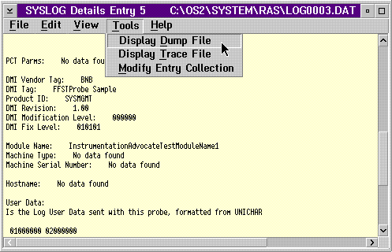

Select the Error Details choice from the View menu on the
SYSLOG Summary window to display a Details screen for the selected log entry.
The Details screen below shows DET1 detailed information about a log entry
created using the current FFST technology. The File and Edit
menu-bar choices are standard OS/2 choices.
SYSLOG DET1 Record Details Window
The following screen shows an example of User Data that was requested in
the parameters when the FFSTProbe API was called.
SYSLOG DET1 Record User Data Info
The Details screen shown below is an example of a DET4 error record detailed
information created using back level FFST technology. The formats
of the data may vary.
SYSLOG DET4 Record Details Window
Select the Tools menu-bar choice from the Details window that is
shown in Error Details to access
dump and trace data and change entry collections.
Tools Menu-Bar Choices on the SYSLOG Details Window

The Display Dump File choice starts the PM Dump Facility dump formatter by using the parameters that are contained in the log record being displayed. Capturing and Saving Failure-Related Information through Dumps contains more information about dumps.
The Display Trace File choice starts the trace formatter by using the parameters that are contained in the log record being displayed. Analyzing Performance and Debugging Problems Using Trace contains more information about trace.
The Modify Entry Collection choice starts the PCT (probe control table) function of FFST. You can use the PCT tool to change options that are associated with the call to FFSTProbe that generated this log entry. For more information about the PCT function, see Probe Control Table.